内容要点
摄影博主 Leo《迷人仿色教程》第十期，拆解日本摄影师品川力的低饱和暗调：暖不是靠死拉白平衡，而是中间调的品红暖，阴影与高光偏冷，形成内敛冷暖对比。全程在 Lightroom 走「曲线铺基调→基础面板→混色降饱和→颜色分级三区→校准青橙色」，并强调参数必须能复用到一组手机片，才算真正形成风格。
知识结构
完美仿色钩子后介绍第十期：品川力=空气感与叙事性交汇；极简里有温润厚度，非刻板「清新」日系。
低饱和暗调、偏电影影调；暖是品红暖而非黄暖；阴影与高光偏冷，中间调暖，冷暖对比内敛。
左端红蓝突出→阴影偏青蓝；高光绿红突出→琥珀绿感；蓝降饱和偏青、红偏橙，整体褪色复古。
手机素材实战；一张调好却不能复用不算成功；iPhone 片先改 Adobe 色彩，主张曲线先于基本参数铺基调。
三原色曲线拉对比，红曲线让高光偏青；区域曲线柔化亮部、压暗；再提阴影与黑色、压高光白色、略降清晰度。
蓝/青/绿/黄/橙/红系统性偏色并降饱和；故事感靠氛围而非堆暖色饱和。
阴影青蓝 H156/S40，高光琥珀绿 H100/S7，中间调品红暖 H335/S32，混合平衡 100；校准「右右左」加强青橙。
微调白平衡与曲线后复制到同组片，只动基本参数即可匹配；前后对比收尾，邀练习与点名摄影师。
品川力仿色的硬核不是「参数清单」，而是可迁移的结构：曲线先铺电影感暗调与亮部青，混色把暖色饱和打薄做成褪色，再用颜色分级把「中间调品红暖 + 阴影/高光冷」嵌回去，校准用青橙公式收束。验收标准是复制到同组其他手机片时，几乎只改曝光等基本参数仍成立。
00:00-00:49迷人仿色第十期：品川力不是「清新」刻板
开场用成片钩子：「记住这个色调……这就是完美的仿色。」Leo 自报摄影博主身份，点明本期是《迷人仿色教程》第十期，目标是拆日本摄影师品川力的作品风格，并在 Lightroom 里完成仿色。
风格定位刻意纠正刻板印象：品川力不是单纯清新日系，而是空气感与叙事性结合——「极简中透着温润的厚度」，常用柔和自然光与留白，捕捉东京街头、家庭日常或孤独瞬间，色调内敛却有情感深度。
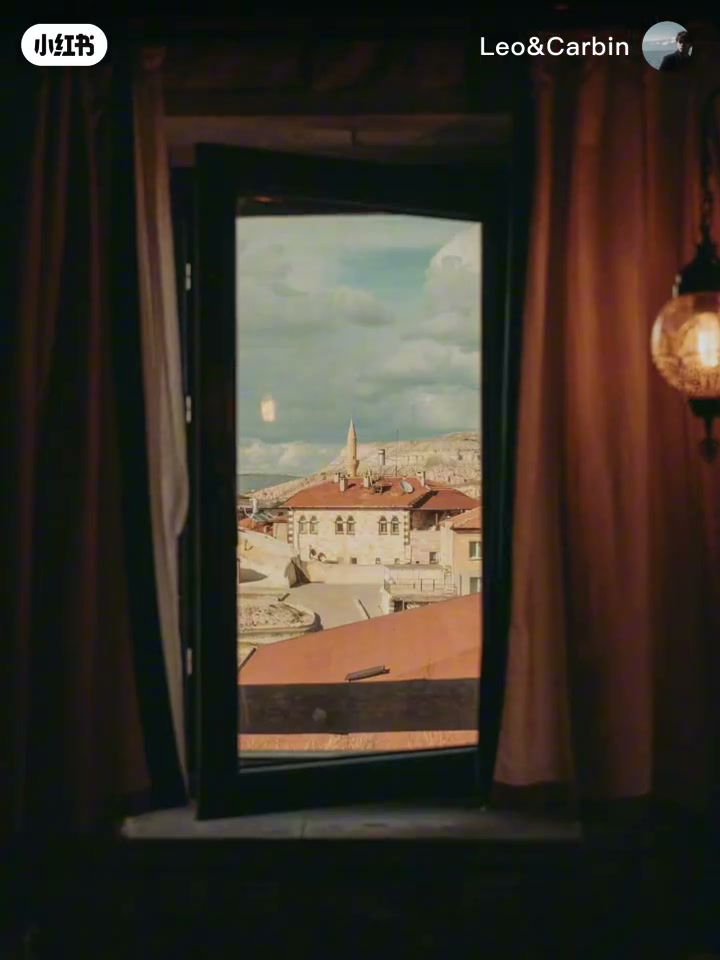
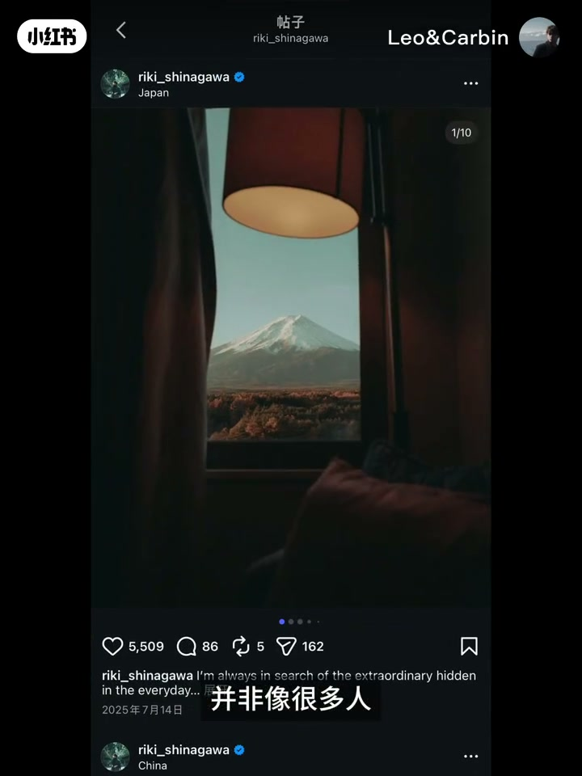
00:49-01:50影调与色调：电影暗调 + 品红暖 + 冷暖内敛
影调上，作品偏典型低饱和暗调：直方图显示虽有高对比，能量多落在中间调一带，阴影有缺失——Leo 把它归为偏电影、有故事感的影调。
色调上看似暖，但「不是单纯靠拉白平衡把照片变暖」，也「不是黄色暖，而是品红暖」；阴影与高光偏冷，于是阴影—中间调—高光形成非常内敛的冷暖对比。这三点合在一起，才是品川力的风格指纹。
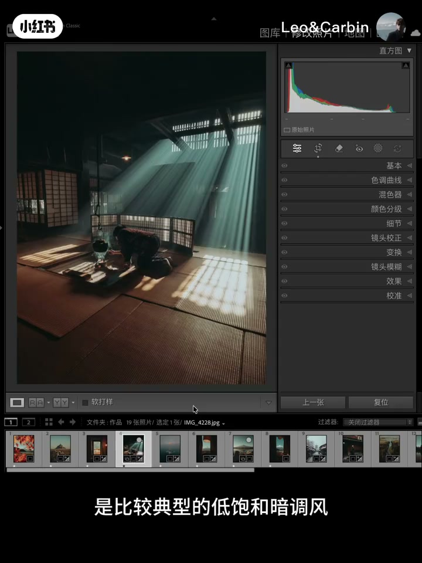
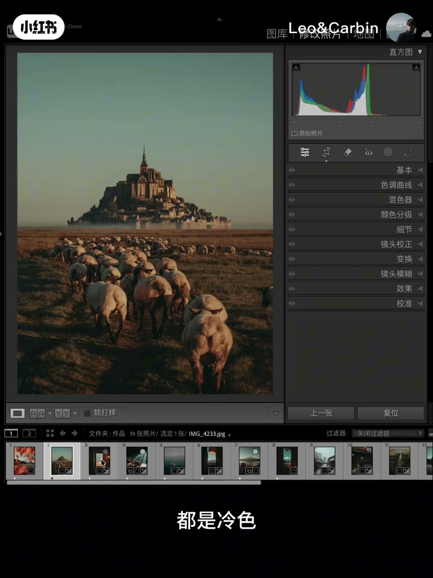
01:50-02:23直方图读色：阴影青蓝、高光琥珀绿、整体褪色
继续读直方图最左端：左端哪种颜色突出，说明该色在阴影里相对少——红与蓝突出，对应阴影呈青蓝色；高光端绿与红突出，对应琥珀绿混色感。
混色观察上，蓝色饱和大幅降低且偏青，红色偏橙，整体有褪色与复古感。作品分析收束后，进入实战。
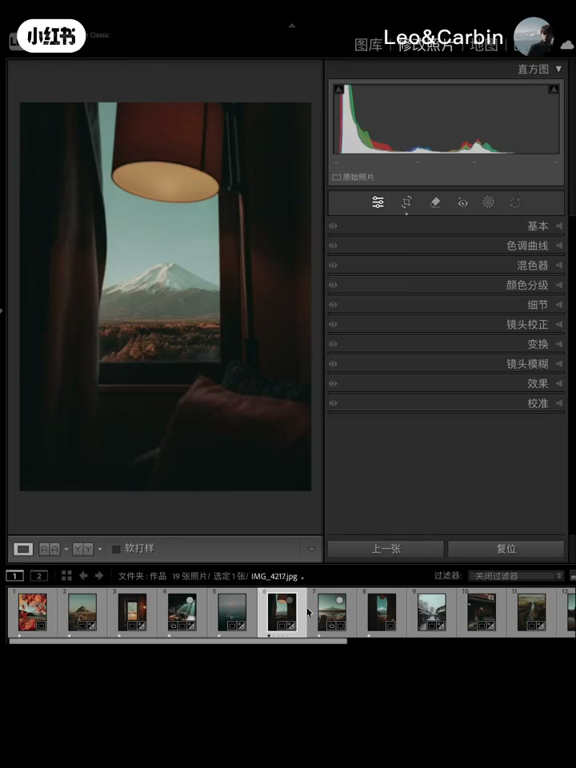
02:23-03:16实战门槛：能复用才算风格，先 Adobe 再曲线铺调
素材是 Leo 手机拍的一组片：先精调一张，再把参数复制到其他照片验证预设。他反复强调——调好一张不算什么；参数不能复用，后期会很累，也难形成自己的调色风格，因此「只为参数」的笔记意义不大、还容易误导。
本张 iPhone 原片先把颜色模式改为 Adobe 色彩。流程偏好：不要先拧基本参数，而像画水彩/油画一样先用曲线铺基调；先用三原色曲线拉对比，为后面的品川力亮部青色打底。
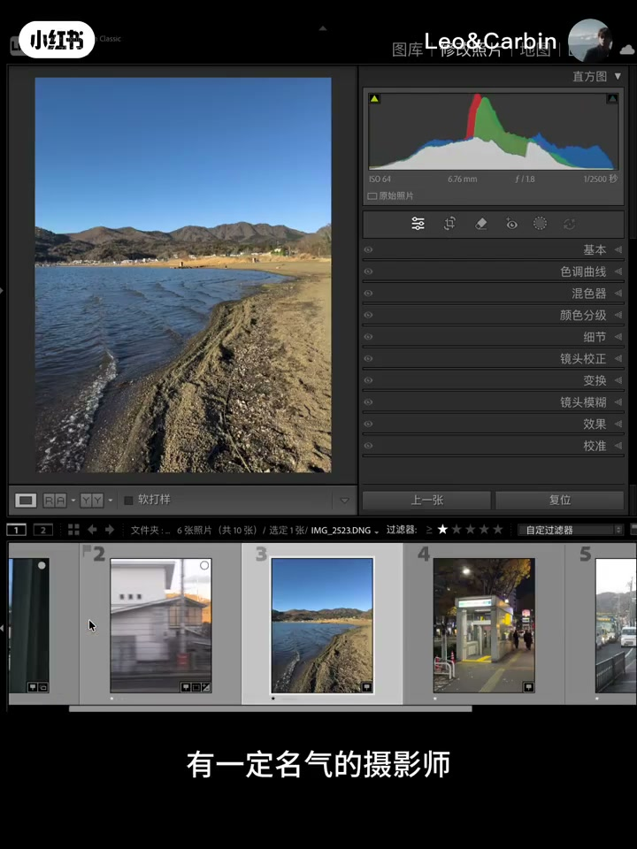
03:16-04:43曲线铺基调 + 基础面板：亮部青、暗调柔、细节回血
红色曲线让高光偏青——对应原作「统一暖调但亮部偏青」的明显特征；不必急着上颜色分级。再用曲线中和对比，亮部往下放，避免刺眼；区域曲线压低暗部，贴合暗调风格。
暗部细节看不见时回到基础面板：略提阴影、大幅提升黑色色阶（曲线已压暗，这里不必再压黑），同时柔化高对比带来的硬朗感；降低高光与白色色阶，并略降清晰度，把电影感暗调稳住。
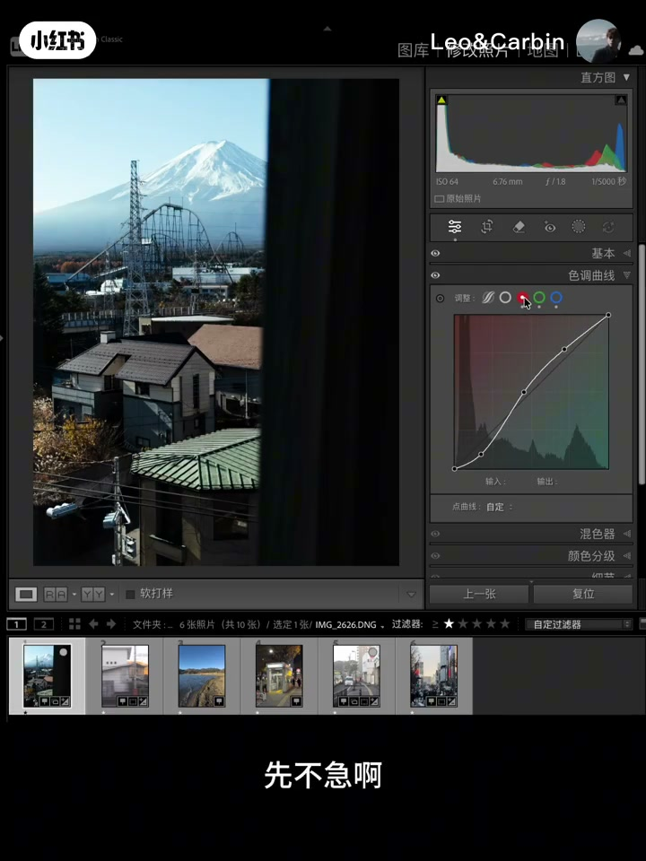
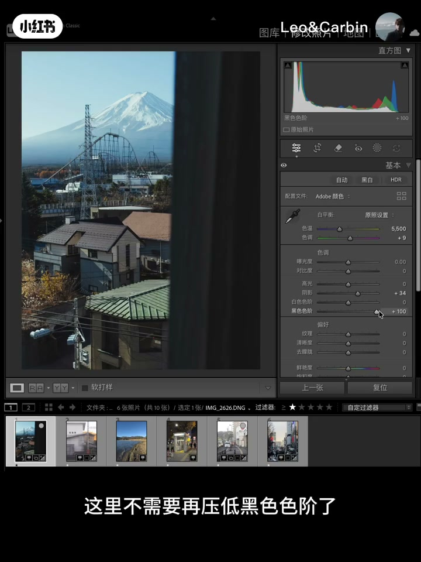
04:43-05:48混色面板：降暖色饱和，用褪色换故事感
混色路径很具体：蓝色偏青并大幅降饱和；青色往蓝回一点、降饱和、提亮度让青更干净；绿色偏黄并降饱和；黄色略偏橙并大幅降饱和；橙色再「沉」一点做褪色；红色往橙靠并降饱和。
方法论句：「具有故事感的暖调一定要降低暖色饱和」——故事感不是靠颜色堆出来的，而是靠色调氛围。画面暂时「没颜色」是预期状态，下一步用颜色分级把氛围加回来。
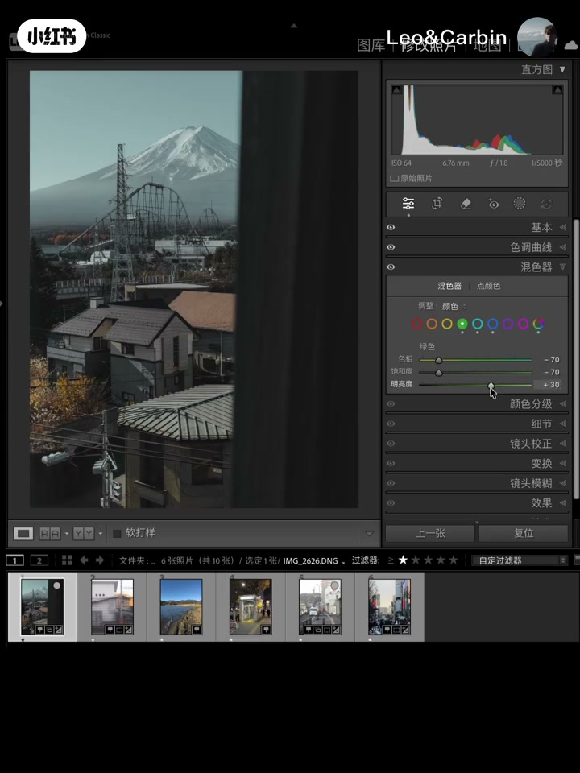
05:48-06:52颜色分级三区 + 校准「右右左」青橙色
颜色分级对齐前面的分析：阴影加青蓝（略偏绿），色相 156、饱和 40；高光加琥珀绿，色相 100、饱和 7；中间调加品红暖，色相 335、饱和 32；混合与平衡都到 100。三区混完后，内敛冷暖对比与复古褪色感回来。
校准面板用来加强青橙色分裂：口诀「右右左」是青橙色调色公式。对比前后与原作，色调已非常接近；再回基本面板微调细节，并略加白平衡暖感；阴影发灰则回曲线略压暗，影调与色调一并贴齐。
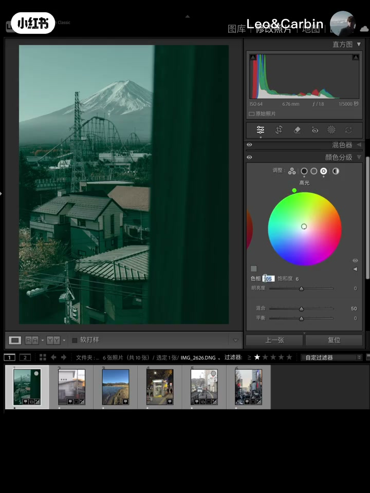
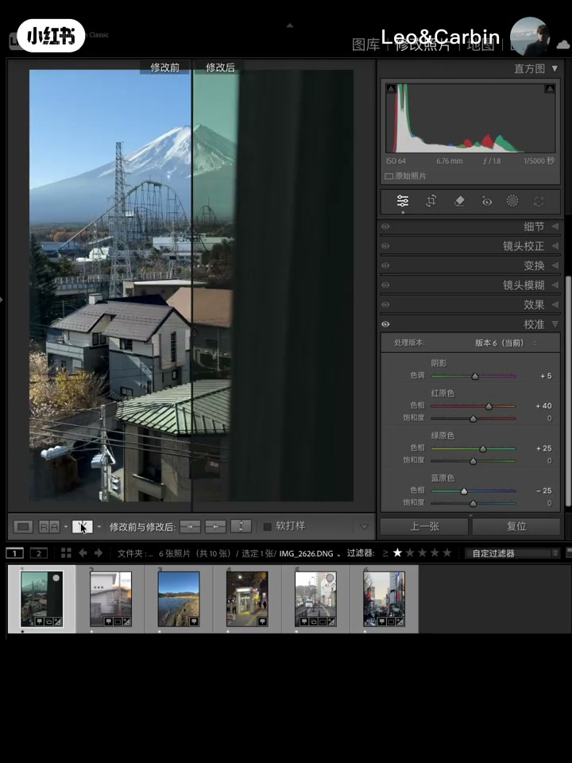
06:52-08:57复制到同组片：只动基本参数即算调色成功
把参数复制到其他手机片：通常只需降低曝光等基本参数微调，色调与影调仍匹配原作与主案例。「完全不用动其他地方」被 Leo 当作本次调色成功的判据——说明结构参数可复用，而不是单张碰运气。
收尾放出一组前后对比，邀请留言要素材私信发送；欢迎在评论区点名想学的摄影师，下期继续仿色。片尾：「我是 Leo，我们下期再见。」
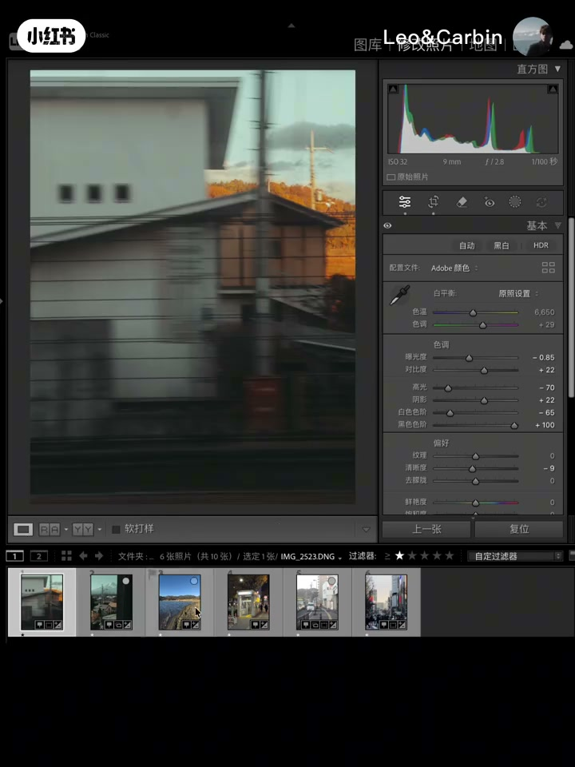
完整转录（190段）
以下文本由 Whisper medium 模型自动转录，可能存在少量识别误差，已尽可能修正。
记住这个色调,如何把这组图调成刚刚的色
这就是完美的仿色
哈喽大家好,我是摄影博主Leo
今天是《迷人仿色教程》第十期
想跟大家一起深入探讨的
是日本摄影师品川丽的作品风格
并教大家如何在Lightroom里面进行完美仿色
品川丽的作品是当代日系摄影中空气感与叙事性结合的典范
它的风格并非像很多人对日本摄影的刻板印象
单纯的清新,而是在极简中透着一种温润的厚度
它常利用柔和的自然光和适当的留白
捕捉东京街头家庭日常或孤独的瞬间
画面色调内敛但富有情感深度
传达出一种情感深度
接下来我们来分析这些作品的色调和影调
品川丽的作品是比较典型的低饱和暗调风
从直方图我们可以看出
虽然是高对比
但影调距于常调和中调之间
量不缺失比较多
阴影也有缺失
这种影调是比较典型的电影影调
特点是影调比较高调
而影调比较低调
而影调比较高调
这种影调是比较典型的电影影调
特点是非常具有故事感
再看色调
照片看上去是暖调
但要注意
这里的暖调不是单纯靠拉白平衡把照片变暖
那通过什么变暖呢
这里先卖个关子
再就是这里的暖调不是黄色暖
而是品红暖
再看它的阴影和高光都是冷色
这恰好就让照片的阴影中间调
中间调高光形成了冷暖对比
对比非常内敛
这就是品川丽风格特点
我们再观察直方图最左端
上期教程我有提到
左端什么颜色突出说明什么颜色就少
这里红色和蓝色突出
说明照片的阴影呈现青蓝色
再看高光
绿色和红色突出
所以高光呈现琥珀绿
混色这里
蓝色饱和大幅度降低
且偏向青色
红色偏向橙色
整体颜色有褪色感
给人一种复古感
通过作品分析
总结出调色思路
接下来
打卡直接进入实战
这些是接下来会用到的调色素材
都是我用手机拍的
我会选一张作为调色案例
完成后同样会把参数复制到其他照片
看看预设的效果如何
提过很多次啊
一张照片的调色成功并不算什么
要想成为有一定名气的摄影师
必须要有自己的调色风格
如果调好一张的照片
但这些参数不能复用到其他照片
这种调色在我看来是不成功的
不能复用代表后期会很累
也很难形成自己的风格
所以我也不建议同学们
去看那种只为参数的笔记
那种笔记我认为意义不大
反而会误导同学们
这张照片因为是用iphone拍的照片
这里先把颜色模式改为adobe颜色
我们先用曲线铺调
有些同学喜欢先调基本参数
我建议大家都先用曲线
就好像画水彩油画一样先铺基调
先用三原色曲线拉对比
在红色曲线这里让高光偏青色
有同学会问
为什么不直接在颜色分级面板里给高光加轻
先不急啊
颜色分级面板后面再用到
我们来看品川丽的作品
统一的暖调
但不难发现亮部是偏青色的
这是一个比较明显的特征
所以在用曲线做基调的同时
就把亮出的青色先加上
接着我们再用这个曲线来中和下
让对比度显得柔和一些
亮部往下放
注意看直方图亮部的变化
这样做是为了亮部不那么刺眼
继续用区域曲线压低暗部
因为品川丽的风格是暗调
现在暗部细节看不到了对吧
没关系
我们回到基础面板
提升一点阴影细节
大幅度提升黑色色阶
因为我们在曲线了压低了暗部
这里不需要再压低黑色色阶了
这里提升黑色色阶不仅能提升阴影细节
还能柔和因为高对比带来的硬朗感
降低高光和白色色阶
稍微降低清晰度
接着我们来到混色面板
蓝色偏青色
饱和大幅度降低
青色往蓝色回来点
也降低饱和
提高亮度让青色干净点
绿色偏向黄色
饱和也降低
黄色稍微偏向橙色
饱和大幅度降低
具有故事感的暖调一定要降低暖色饱和
因为故事感不是靠颜色去支撑的
而是靠色调氛围感去呈现的
橙色再沉下去让它有褪色的感觉
红色往橙色来一点
饱和也降一降
现在整个画面看上去是不是没有颜色了
没关系
我们来到颜色分级给照片添加色调氛围
还记得前面的色调分析吗
阴影这里添加青蓝色
稍微往绿色偏多点
色相给156
饱和给40
高光添加琥珀绿
色相100
饱和给7吧
中间调这里
让画面增加品红暖调
色相335
饱和32
混合和平衡都给到100
通过三个区域的配色混合
这时候画面就有了比较内敛的冷暖对比
有种复古褪色感
我们继续来到校准面板加强画面的澄清色
这里记住个知识点
校准这里
右右左是澄清色的调色公式
对比下前后看看变化
跟原作对比看看
这时候就已经非常相似了
我们再回到基本面板调整下细节
再用白平衡增加一点暖色
感觉阴影有点发灰
回到曲线压暗点
看
不管是色调还是影调
都跟品川丽的风格一样
我们试一下
我们试着把这些参数复制到其他照片
看看效果如何
降低曝光
基本参数稀微调整下
看一下前后对比
跟原作的对比
很完美对吧
看一下这张
同样调整下基本参数
色调、影调都非常匹配
大家发现没有
我只需要根据照片稍微调整下基本参数就可以了
完全不用动其他地方
这就说明这次调色是成功的
总体的调色思路就是这样
不知道大家有没有收获
也希望大家看完视频可以上手练习
可以在下方留言想要素材
我会私信发你的
接下来一起看一下这些照片的前后对比吧
好啦
以上就是本期视频的全部内容
如果有收获的话可以持续关注
感谢观看
如果大家有喜欢的摄影师也可以在评论区告诉我
我会教你模仿出你心目中大神的色调
我是Leo
我们下期再见